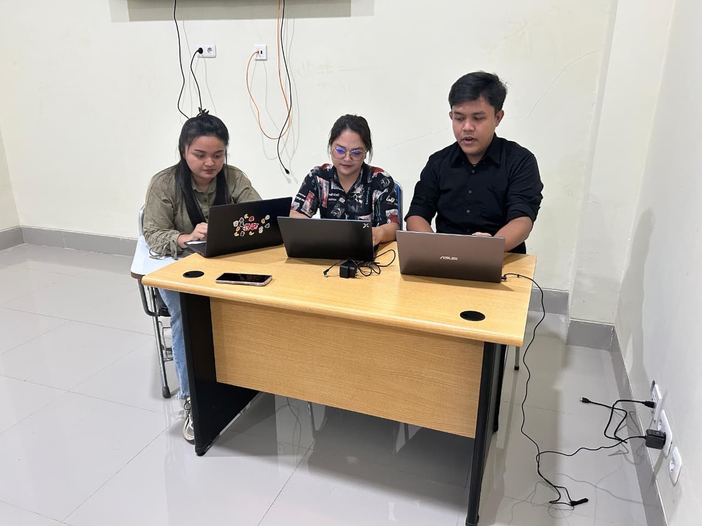

Tentang Kami
Membantu membaca kebiasaan digital dengan data yang rapi.
Media Survey dibuat sebagai sistem survey penggunaan media sosial yang sederhana untuk responden, namun tetap lengkap untuk kebutuhan pengelolaan dan analisis data oleh admin.

Tujuan
Mengumpulkan data kebiasaan penggunaan media sosial agar pola platform, durasi, tujuan, dan dampaknya dapat dipahami dengan lebih jelas.
Pendekatan
Form dibuat ringkas, data tersimpan di Supabase, dan halaman admin dilindungi autentikasi agar pengelolaan lebih tertib.
Manfaat
Admin dapat melihat ringkasan, mengelola response, mengekspor CSV, dan membaca statistik visual menggunakan Chart.js.